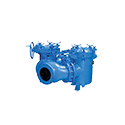

Strainers and Basket Filters
Harrington is a leading supplier of high-quality strainers and basket strainers. Our extensive selection includes a variety of brands, styles, material types, and specifications. These strainers are essential for removing unwanted particles from liquids, such as debris, seeds, pulp, herbs, tea leaves, or spices. They are commonly used to protect equipment from damage and are found in applications like water treatment, food production, pharmaceuticals, and automotive fluid production. Choose your product to request a quote, obtain additional information, and explore purchasing options.
 Eaton Model 50 Duplex Strainer, Bronze Construction, 6" 150# Flange, Bronze Plug, Buna-N Sealper EA · Sign in for price
Eaton Model 50 Duplex Strainer, Bronze Construction, 6" 150# Flange, Bronze Plug, Buna-N Sealper EA · Sign in for price- Eaton Model 50 Duplex Strainer, Cast Iron Construction, 6" 125# Flange, Bronze Plug, Buna-N Sealper EA · Sign in for price
- Eaton Model 50 Duplex Strainer, Stainless Steel Construction, 6" 150# Flange, Stainless Steel Plug, Viton® Sealper EA · Sign in for price
- Eaton Model 50 Duplex Strainer, Bronze Construction, 8" 150# Flange, Bronze Plug, Buna-N Sealper EA · Sign in for price
- Eaton Model 50 Duplex Strainer, Cast Iron Construction, 8" 125# Flange, Bronze Plug, Buna-N Sealper EA · Sign in for price

Eaton Model 52 Large Duplex Strainer, Stainless Cast Iron Construction, 10" 125# Flange, Buna-N Seal, With Butterfly Valveper EA · Sign in for price- Eaton Model 52 Large Duplex Strainer, Stainless Cast Iron Construction, 12" 125# Flange, Buna-N Seal, With Butterfly Valveper EA · Sign in for price
- Eaton Model 52 Large Duplex Strainer, Stainless Cast Iron Construction, 14" 125# Flange, Buna-N Seal, With Butterfly Valveper EA · Sign in for price
- Eaton Model 52 Large Duplex Strainer, Stainless Cast Iron Construction, 16" 125# Flange, Buna-N Seal, With Butterfly Valveper EA · Sign in for price
- Eaton Model 52 Large Duplex Strainer, Stainless Cast Iron Construction, 18" 125# Flange, Buna-N Seal, With Butterfly Valveper EA · Sign in for price
 Eaton Model 53BTX Duplex Strainer, Cast Iron Construction, 3/4" NPT, Teflon® Seats, Buna-N Seal, Stainless Steel Diverter Ballsper EA · Sign in for price
Eaton Model 53BTX Duplex Strainer, Cast Iron Construction, 3/4" NPT, Teflon® Seats, Buna-N Seal, Stainless Steel Diverter Ballsper EA · Sign in for price- Eaton Model 53BTX Duplex Strainer, Stainless Steel Construction, 3/4" NPT, Teflon® Seats, Viton® Seal, Stainless Steel Diverter Ballsper EA · Sign in for price
- Eaton Model 53BTX Duplex Strainer, Cast Iron Construction, 1" 125# Flange, Teflon® Seats, Buna-N Seal, Stainless Steel Diverter Ballsper EA · Sign in for price
- Eaton Model 53BTX Duplex Strainer, Cast Iron Construction, 1" NPT, Teflon® Seats, Buna-N Seal, Stainless Steel Diverter Ballsper EA · Sign in for price
- Eaton Model 53BTX Duplex Strainer, Stainless Steel Construction, 1" 150# Flange, Teflon® Seats, Viton® Seal, Stainless Steel Diverter Ballsper EA · Sign in for price
- Eaton Model 53BTX Duplex Strainer, Carbon Steel Construction, 1" 150# Flange, Teflon® Seats, Buna-N Seal, Stainless Steel Diverter Ballsper EA · Sign in for price
- Eaton Model 53BTX Duplex Strainer, Stainless Steel Construction, 1" NPT, Teflon® Seats, Viton® Seal, Stainless Steel Diverter BallsCall for availabilityAsk a branch
- Eaton Model 53BTX Duplex Strainer, Cast Iron Construction, 1-1/4" NPT, Teflon® Seats, Buna-N Seal, Stainless Steel Diverter Ballsper EA · Sign in for price
- Eaton Model 53BTX Duplex Strainer, Stainless Steel Construction, 1-1/4" NPT, Teflon® Seats, Viton® Seal, Stainless Steel Diverter Ballsper EA · Sign in for price
- Eaton Model 53BTX Duplex Strainer, Cast Iron Construction, 1-1/2" NPT, Teflon® Seats, Buna-N Seal, Stainless Steel Diverter BallsCall for availabilityAsk a branch
- Eaton Model 53BTX Duplex Strainer, Bronze Construction, 1-1/2" 150# Flange, Teflon® Seats, Buna-N Seal, Stainless Steel Diverter Ballsper EA · Sign in for price
- Eaton Model 53BTX Duplex Strainer, Stainless Steel Construction, 1-1/2" 150# Flange, Teflon® Seats, Viton® Seal, Stainless Steel Diverter Ballsper EA · Sign in for price
- Eaton Model 53BTX Duplex Strainer, Carbon Steel Construction, 1-1/2" 150# Flange, Teflon® Seats, Buna-N Seal, Stainless Steel Diverter Ballsper EA · Sign in for price
- Eaton Model 53BTX Duplex Strainer, Stainless Steel Construction, 1-1/2" NPT, Teflon® Seats, Viton® Seal, Stainless Steel Diverter Ballsper EA · Sign in for price
- Eaton Model 53BTX Duplex Strainer, Cast Iron Construction, 2" 125# Flange, Teflon® Seats, Buna-N Seal, Stainless Steel Diverter Ballsper EA · Sign in for price
- Eaton Model 53BTX Duplex Strainer, Cast Iron Construction, 2" NPT, Teflon® Seats, Buna-N Seal, Stainless Steel Diverter Ballsper EA · Sign in for price
- Eaton Model 53BTX Duplex Strainer, Bronze Construction, 2" 150# Flange, Teflon® Seats, Buna-N Seal, Stainless Steel Diverter Ballsper EA · Sign in for price
- Eaton Model 53BTX Duplex Strainer, Stainless Steel Construction, 2" 150# Flange, Teflon® Seats, Viton® Seal, Stainless Steel Diverter Ballsper EA · Sign in for price
- Eaton Model 53BTX Duplex Strainer, Carbon Steel Construction, 2" 150# Flange, Teflon® Seats, Buna-N Seal, Stainless Steel Diverter Ballsper EA · Sign in for price
- Eaton Model 53BTX Duplex Strainer, Stainless Steel Construction, 2" NPT, Teflon® Seats, Viton® Seal, Stainless Steel Diverter Ballsper EA · Sign in for price
- Eaton Model 53BTX Duplex Strainer, Cast Iron Construction, 2-1/2" 125# Flange, Teflon® Seats, Buna-N Seal, Stainless Steel Diverter Ballsper EA · Sign in for price
- Eaton Model 53BTX Duplex Strainer, Bronze Construction, 2-1/2" 150# Flange, Teflon® Seats, Buna-N Seal, Stainless Steel Diverter Ballsper EA · Sign in for price
- Eaton Model 53BTX Duplex Strainer, Stainless Steel Construction, 2-1/2" 150# Flange, Teflon® Seats, Viton® Seal, Stainless Steel Diverter Ballsper EA · Sign in for price
- Eaton Model 53BTX Duplex Strainer, Carbon Steel Construction, 2-1/2" 150# Flange, Teflon® Seats, Buna-N Seal, Stainless Steel Diverter Ballsper EA · Sign in for price
- Eaton Model 53BTX Duplex Strainer, Cast Iron Construction, 3" 125# Flange, Teflon® Seats, Buna-N Seal, Stainless Steel Diverter Ballsper EA · Sign in for price
- Eaton Model 53BTX Duplex Strainer, Bronze Construction, 3" 150# Flange, Teflon® Seats, Buna-N Seal, Stainless Steel Diverter Ballsper EA · Sign in for price
- Eaton Model 53BTX Duplex Strainer, Stainless Steel Construction, 3" 150# Flange, Teflon® Seats, Viton® Seal, Stainless Steel Diverter Ballsper EA · Sign in for price
- Eaton Model 53BTX Duplex Strainer, Carbon Steel Construction, 3" 150# Flange, Teflon® Seats, Buna-N Seal, Stainless Steel Diverter BallsCall for availabilityAsk a branch
- Eaton Model 53BTX Duplex Strainer, Cast Iron Construction, 4" 125# Flange, Teflon® Seats, Buna-N Seal, Stainless Steel Diverter Ballsper EA · Sign in for price
- Eaton Model 53BTX Duplex Strainer, Bronze Construction, 4" 150# Flange, Teflon® Seats, Buna-N Seal, Stainless Steel Diverter Ballsper EA · Sign in for price